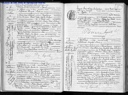

Genealogie_Complete

Graphique personnel
Parents
| Père | Date de naissance | Mère | Date de naissance |
|---|---|---|---|
 Jean Martial MALLERON Jean Martial MALLERON |
09 mai 1855 |  Justine Marie GALLOIS (MALLERON) Justine Marie GALLOIS (MALLERON) |
13 oct. 1860 |
Conjoints
| Conjoint | Date de naissance | Enfants |
|---|---|---|
| Camille Gabriel BLONDEAU |
02 nov. 1878 | Francine Jeanne BLONDEAUSolange BLONDEAUSerge BLONDEAUSonia Jeanne BLONDEAU (VEYRIER) |
Événements personnels
| Type d’événement | Date | Lieu | Description |
|---|---|---|---|
 Naissance Naissance |
06 oct. 1886 | Neuvy-Deux-Clochers, Cher, Centre-Val de Loire, FRANCE | |
| Mariage |
27 févr. 1905 | Neuvy-Deux-Clochers, Cher, Centre-Val de Loire, FRANCE |
Notes
| Acte de naissance (voir "http://www.archives18.fr/ark:/41383/s00512b7b6e17bf8/512b7b6e1de5e") : L'an 1886 le 7 du mois d'octobre... née au bourg le 6 |
| Notes concernant l'union Acte de mariage (voir "http://www.archives18.fr/ark:/41383/s00588600c40a65b/588601ae841f6") : ... présence de Maurice Blondeau 28 ans frère du marié cultivateur à Neuvy deux Clochers (18), Olympe Trivaudey 30 ans beau frère du marié instituteur à Neuilly en Sancerre (18), Auguste Malleron 33 ans oncle de la mariée journalier à Morogues (18), Hippolyte Gallois 40 ans oncle de la mariée maître d'hôtel à Veaugues (18). Contrat de mariage passé devant Maître Bourgeois, notaire à Henrichemont, le 21/02/1905 |
Sources
| Description | Référence/Commentaire | Qualité | Information | Preuve |
|---|---|---|---|---|
| Naissance: AD18 - Neuvy-deux-Clochers (1883-1892) NMD - 3E5116 p26/248 |
Je ne sais pas | Je ne sais pas | Je ne sais pas | |
| Naissance: AD18 - Neuvy-deux-Clochers (1883-1892) NMD - 3E5116 p26/248 |
Je ne sais pas | Je ne sais pas | Je ne sais pas | |
| Naissance: AD18 - Neuvy-deux-Clochers (1883-1892) NMD - 3E5116 p26/248 |
Je ne sais pas | Je ne sais pas | Je ne sais pas | |
| Union: AD18 - Neuvy-deux-Clochers (1903-1912) NMD - 3E6554 p73/196 |
Je ne sais pas | Je ne sais pas | Je ne sais pas | |
| Union: AD18 - Neuvy-deux-Clochers (1903-1912) NMD - 3E6554 p73/196 |
Je ne sais pas | Je ne sais pas | Je ne sais pas | |
| Union: AD18 - Neuvy-deux-Clochers (1903-1912) NMD - 3E6554 p73/196 |
Je ne sais pas | Je ne sais pas | Je ne sais pas |